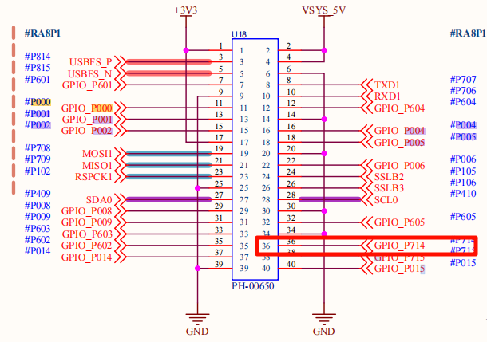
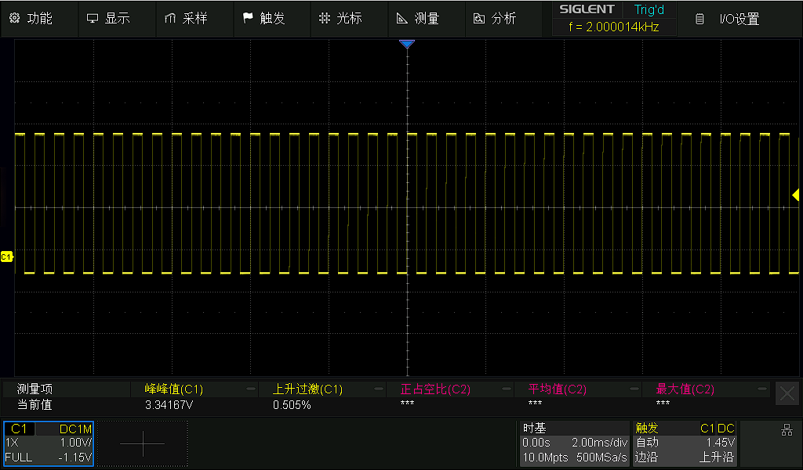

GPT 驱动示例说明
简介
本示例项目展示如何在 Titan Board Mini (基于 RA8P1) 上使用 RT-Thread 定时器设备驱动框架 来实现 GPT（通用PWM定时器）功能。
核心功能特性
PWM 波形生成：支持多种PWM模式（方波、三角波等）
高精度定时：32位高分辨率计数器
多通道支持：同时管理多个定时器通道
输入捕获：测量外部信号频率和脉冲宽度
灵活配置：支持多种时钟源和工作模式
实时控制：微秒级精度的定时控制
技术栈
硬件平台：Renesas RA8P1 (Cortex-M85 + Cortex-M33)
操作系统：RT-Thread 实时操作系统
开发工具：RT-Thread Studio
驱动框架：Renewas FSP (Flexible Software Package)
硬件介绍
1. RA8P1 微控制器特性
RA8P1 是 Renesas 的高性能32位微控制器，专为人工智能和机器学习应用设计：
核心规格
CPU架构：双核异构架构
Cortex-M85：1GHz主频，Helium™向量扩展
Cortex-M33：250MHz主频，TrustZone安全架构
NPU加速：集成Ethos™-55 NPU，256 GOPS AI算力
存储配置：2MB SRAM，支持ECC校验
时钟系统：支持多源时钟，最高1GHz
定时器资源
GPT定时器：多个32位通用PWM定时器
AGT定时器：异步16位定时器
分辨率：最高32位计数器精度
时钟源：PCLK、外部触发、事件链控制
2. GPT 硬件模块详解
2.1 GPT 模块架构
┌─────────────────────────────────────────────────────────┐
│ GPT 定时器模块 │
├─────────────────────────────────────────────────────────┤
│ 定时器控制单元 ▲ PWM比较单元 │
│ (Timer Control) │ (PWM Compare) │
│ │ │
│ 计数器逻辑 │ 输出控制 │
│ (Counter Logic) │ (Output Control) │
│ │ │
│ 输入捕获单元 │ 中断控制器 │
│ (Input Capture) │ (Interrupt Ctrl) │
│ │ │
│ 时钟选择单元 │ 滤波器 │
│ (Clock Select) │ (Filter) │
└─────────────────────────────────────────────────────────┘
2.2 GPT 核心特性
工作模式
周期模式 (Periodic)：持续输出固定周期的脉冲
单次模式 (One-Shot)：仅输出一个脉冲后停止
PWM模式：生成可变占空比的PWM波形
方波PWM (Square Wave PWM)
锯齿波PWM (Saw Wave PWM)
三角波PWM (Triangle Wave PWM)
性能指标
分辨率：32位计数器 (0-4,294,967,295)
时钟频率：最高可达PCLKD/1 (PCLKD支持100MHz+)
输出精度：纳秒级精度
通道数量：每个GPT模块支持多个PWM通道
硬件接口
输出引脚：GTIOCA, GTIOCB (支持极性控制)
输入引脚：支持外部信号触发和测量
事件链：支持与ELC (事件链控制器) 集成
滤波功能：支持输入信号去抖滤波
2.3 RA8P1 GPT 实际配置
基于当前项目配置，Titan Board Mini 的GPT配置如下：
时钟配置
主时钟源：PCLKD
分频系数：可配置 (1-1024)
频率范围：根据系统时钟动态配置
引脚分配
PWM输出：P714
输入捕获：支持多路GPIO
触发源：外部信号或软件触发
软件架构
1. RT-Thread 设备框架
1.1 设备层次结构
┌─────────────────────────────────────────────────────────┐
│ RT-Thread 内核 │
├─────────────────────────────────────────────────────────┤
│ 设备管理层 │
│ ┌─────────────┐ ┌─────────────┐ ┌─────────────┐ │
│ │ PWM设备 │ │ HWTIMER │ │ 其他设备 │ │
│ │ (pwm12) │ │ 设备 │ │ 管理器 │ │
│ └─────────────┘ └─────────────┘ └─────────────┘ │
├─────────────────────────────────────────────────────────┤
│ 驱动抽象层 │
│ ┌─────────────────────────────────────────────────────┐ │
│ │ GPT 驱动层 │ │
│ │ ┌─────────────┐ ┌─────────────┐ ┌─────────────┐ │ │
│ │ │ FSP适配层 │ │ PWM控制 │ │ 中断处理 │ │ │
│ │ │ (r_gpt) │ │ (rt_pwm) │ │ (R_GPT) │ │ │
│ │ └─────────────┘ └─────────────┘ └─────────────┘ │ │
│ └─────────────────────────────────────────────────────┘ │
├─────────────────────────────────────────────────────────┤
│ 硬件抽象层 │
│ ┌─────────────────────────────────────────────────────┐ │
│ │ RA8P1 硬件接口 │ │
│ │ ┌─────────────┐ ┌─────────────┐ ┌─────────────┐ │ │
│ │ │ GPT寄存器 │ │ 中断控制器 │ │ GPIO控制 │ │ │
│ │ │ 操作接口 │ │ NVIC │ │ PORT │ │ │
│ │ └─────────────┘ └─────────────┘ └─────────────┘ │ │
│ └─────────────────────────────────────────────────────┘ │
└─────────────────────────────────────────────────────────┘
1.2 核心接口函数
设备控制接口
// PWM设备查找
rt_device_pwm *rt_device_find(const char *name);
// PWM配置设置
rt_err_t rt_pwm_set(rt_device_pwm *device, int channel,
rt_uint32_t period, rt_uint32_t pulse);
// PWM使能控制
rt_err_t rt_pwm_enable(rt_device_pwm *device, int channel);
rt_err_t rt_pwm_disable(rt_device_pwm *device, int channel);
// HWTIMER接口
rt_err_t rt_device_find(const char *name);
rt_err_t rt_hwtimer_control(rt_device_t dev, int cmd, void *arg);
中断处理接口
// GPT中断服务函数
void timer1_callback(timer_callback_args_t *p_args);
// 中断配置
void R_GPT_Open(gpt_instance_ctrl_t *p_ctrl, const timer_cfg_t *const p_cfg);
void R_GPT_Start(gpt_instance_ctrl_t *p_ctrl);
void R_GPT_Stop(gpt_instance_ctrl_t *p_ctrl);
2. 驱动程序架构
2.1 主要驱动文件
project/Titan_Mini_driver_gpt/
├── src/hal_entry.c # 主程序入口
├── ra/src/r_gpt/r_gpt.c # FSP GPT驱动实现
├── ra/inc/instances/r_gpt.h # GPT头文件
├── ra_cfg/fsp_cfg/r_gpt_cfg.h # GPT配置文件
└── ra_gen/hal_data.h # 硬件抽象层
使用示例
本工程已经把 GPT 示例导出为 pwm_sample MSH 命令，可在串口终端中按照下列步骤体验：
复位开发板后，打开串口终端并输入
pwm_sample <period> <pulse>。period、pulse单位均为纳秒，例如pwm_sample 500000 250000表示输出 2 kHz、占空比 50% 的 PWM。命令运行成功后，串口会提示当前使用的设备（
pwm12）以及周期/脉宽配置。将示波器或逻辑分析仪接到
P714引脚，即可观测到实时 PWM 波形。如果需要停止输出，可重新上电或在命令中输入新的
period/pulse参数覆盖。
配置说明
若需要在自己的工程中复用本示例配置，可按以下步骤操作：
FSP（configuration.xml）
新建
r_gptStack 并选择与本项目一致的 GPT 通道（示例中为pwm12）。将工作模式设为 PWM，启用输出管脚（例如 GTIOC 的
P714），并根据需要配置时钟源/分频。
RT-Thread Settings
在
Device Drivers -> PWM中勾选 PWM 驱动，使系统注册pwm12设备。如果需要在开机自动运行，可以把
pwm_sample命令封装到组件初始化函数中。
硬件连接
P714引脚默认连接到 GPT 通道 12 的输出端，示例通过该引脚驱动外部负载，需根据实际应用外接 MOSFET/LED/测试点。
运行效果示例
在终端输入pwm_sample 500000 250000运行示例

随后将其P714引脚接入到示波器中可以查看到效果，如下图


如有问题或建议，欢迎在 RT-Thread 官方论坛 中提出讨论。